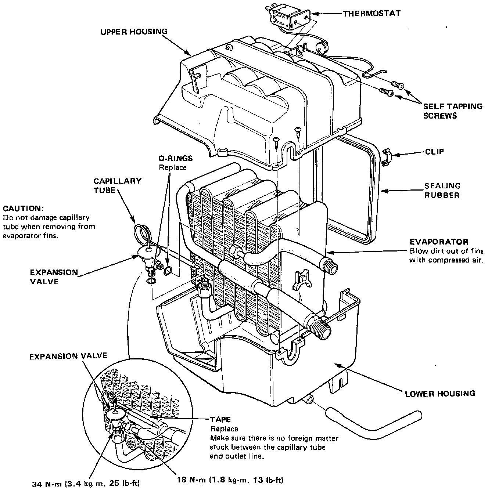

Evaporator Overhaul
Evaporator Overhaul
1. Remove the self-tapping screws and clip from the housing.
2. Carefully separate the housings as required to obtain access to the capillary tube.
3. Pull out the capillary tube of the thermostat from the evaporator fins.
4. Separate the housings and remove the evaporator cover.
5. Remove the expansion valve if necessary.
Assemble the evaporator in the reverse order of disassembly, and;
- Install the expansion cover capillary tube against the suction line, and wrap it with tape.
- Reinstall the thermostat capillary tube in its original location.
- Reassemble the upper and lower housings with clips, make sure there are no gaps between them.